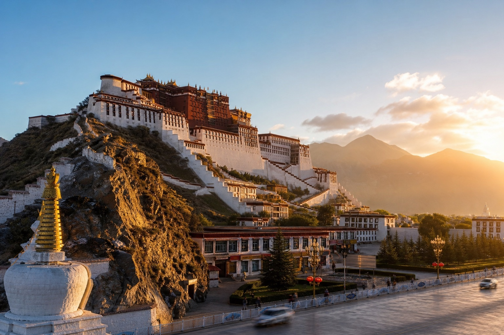
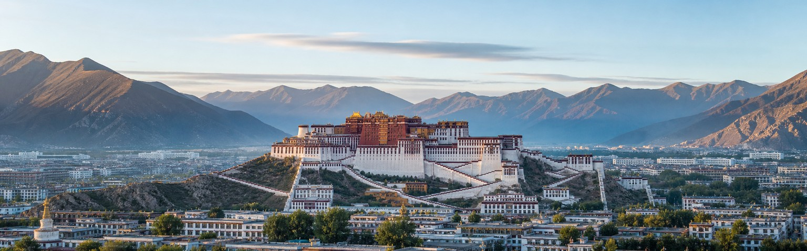
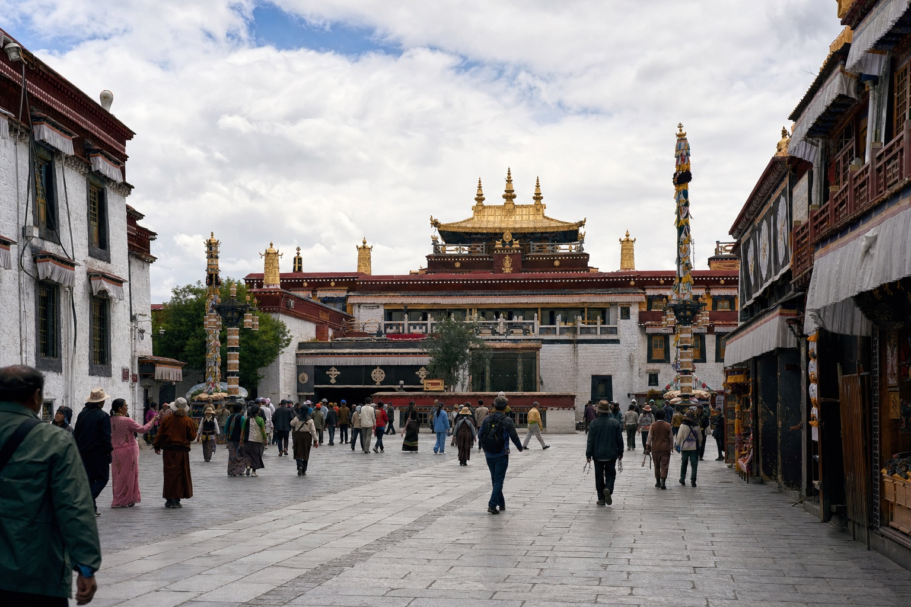
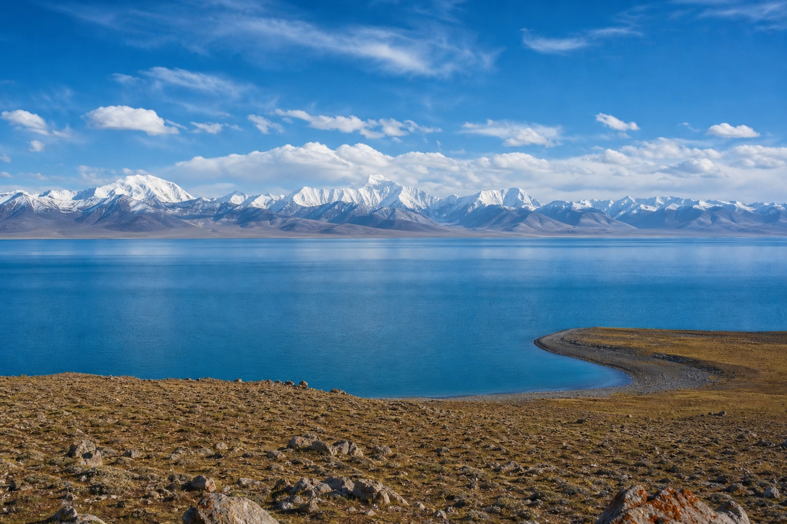
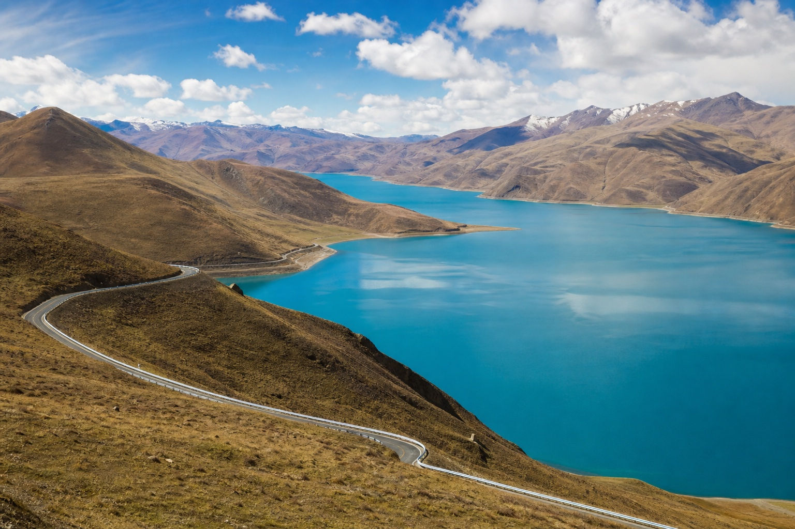
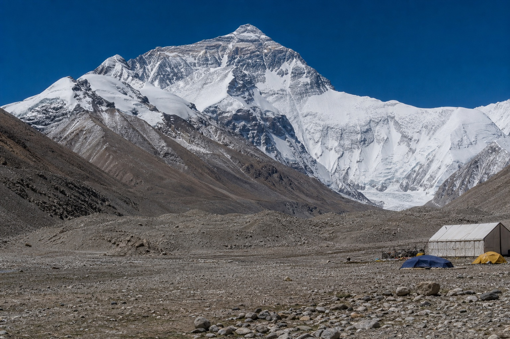
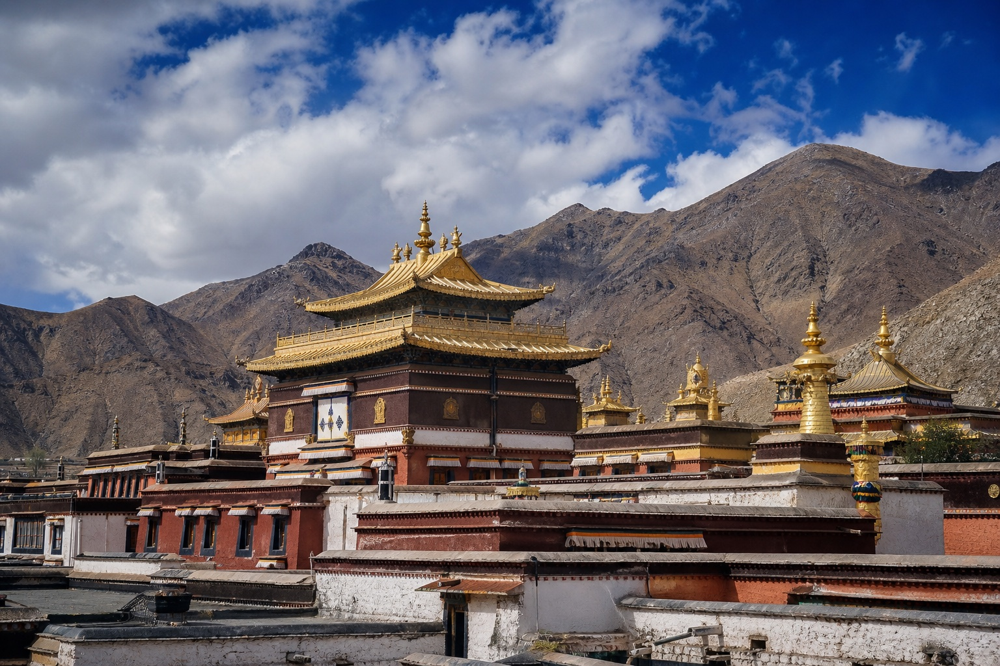
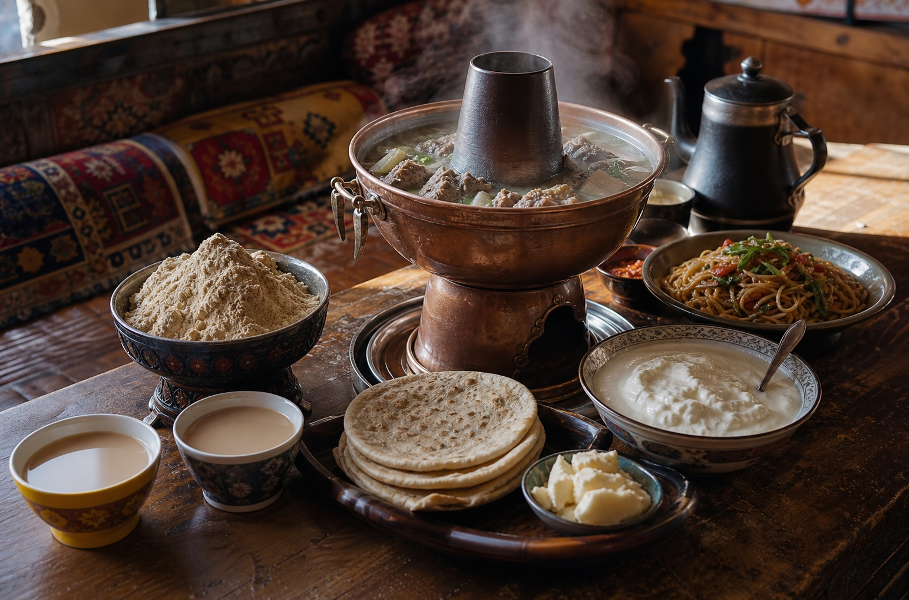

01
Potala Palace
Lhasa’s defining landmark and a central symbol of Tibetan culture.

Journeys on the roof of the world
Across the Tibetan Plateau, monasteries, pilgrimage streets, turquoise lakes, and the world’s highest mountains create a journey unlike any other in China. Lhasa’s Potala Palace and Jokhang Temple are not simply monuments; they remain central landmarks in a living cultural and spiritual landscape.
Altitude changes how the trip must be paced, and foreign passport holders generally need a Tibet Travel Permit arranged in advance through an authorized tour operator. Independent travel is not permitted under current requirements, so route design, acclimatization, and paperwork need to be handled together before booking transport.
01
Start here

Lhasa’s defining landmark and a central symbol of Tibetan culture.

A sacred temple at the heart of the Barkhor pilgrimage circuit.

High-altitude blue water framed by distant snow mountains.

A winding turquoise lake on the road toward central Tibet.

A remote view of the world’s highest mountain from Tibet.

A major monastic complex in historic Shigatse.
02
Eat like a local

03
Recommended time
Five to seven days suit Lhasa and nearby lakes; Everest or western routes require more time and slower altitude gain.
Get ItineraryAcclimatize in Lhasa, visit the Potala Palace and Jokhang Temple, then add one carefully paced lake journey.
Continue through Gyantse and Shigatse while increasing altitude gradually.
Add Everest Base Camp or a longer western route with permit, guide, vehicle, and contingency time arranged together.
Your Tibet, made clearer
Tell us your dates, passport nationality, and preferred route. We’ll help confirm what is feasible before permits, transport, and altitude-sensitive pacing are arranged.
Start With Your Tibet Trip